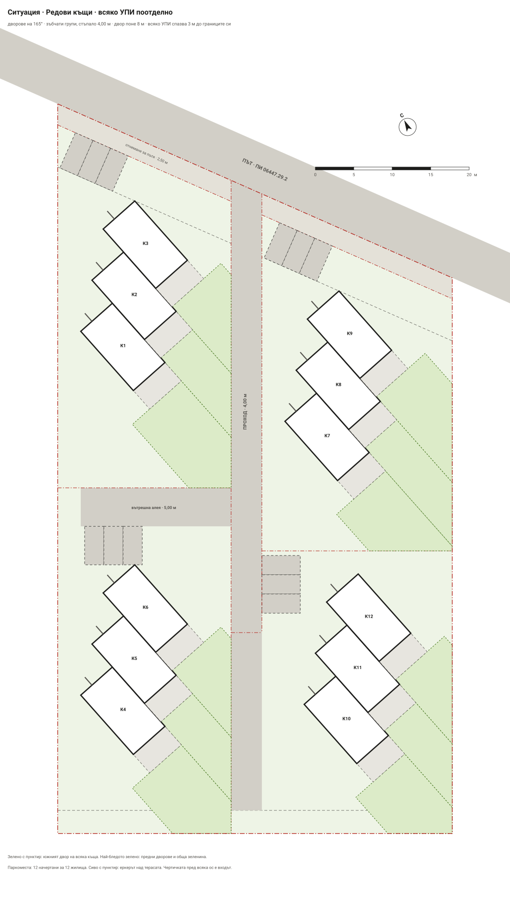
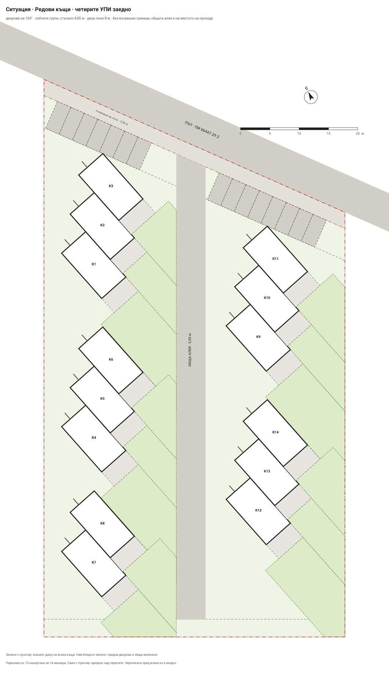
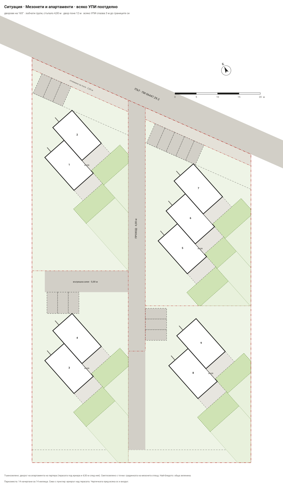

На юг: редови къщи и мезонети, заедно и поотделно
Всички сгради са завъртени така, че дворовете гледат на 165°, и са подредени в зъбчати групи като във варианта „на юг“. Всяко жилище има свой двор: редовите къщи на юг от къщата; при мезонетите апартаментът на партера взима терасата и 4,50 м след нея, а мезонетът градинката отвъд. Подредбата е намерена от програма, която слага възможно най-много групи при едни и същи правила. Не е ръчно доизпипана.
Какво дава всяка комбинация
| Вариант | Жилища | РЗП | Кинт | Свой двор на жилище | Слънце на 21 дек., часове | Паркоместа |
|---|---|---|---|---|---|---|
| Редови къщи · всяко УПИ поотделно | 12 къщи по 131 м² | 1 571 м² | 0,40 | 55–105 м² | 3,0 / 4,9 | 12 |
| Редови къщи · четирите УПИ заедно | 14 къщи по 131 м² | 1 833 м² | 0,47 | 60–135 м² | 3,3 / 4,9 | 15 |
| Мезонети и апартаменти · всяко УПИ поотделно | 14: 9 мезонета, 4 апартамента по 109 м², 1 по 55 м² | 2 031 м² | 0,52 | апартамент 40–80 м² мезонет 30–90 м² | 2,3 / 5,0 | 14 |
| Мезонети и апартаменти · четирите УПИ заедно | 15: 10 мезонета, 5 апартамента по 109 м² | 2 257 м² | 0,58 | апартамент 80–80 м² мезонет 35–100 м² | 2,2 / 5,0 | 16 |
| Мезонети · заедно · доизпипан на ръка | 18: 12 мезонета, 6 апартамента по 109 м² | 2 708 м² | 0,69 | апартамент 55 м² + 38 м² тераса мезонет 30–45 м² | 2,2 / 5,0 | 18 |
| За сравнение: мезонети заедно, редове по дълбочината (изток / запад) | 27 | 4 507 м² | 1,15 | само апартаментите на партера | не е смятано | 30 |
| За сравнение: мезонети поотделно, редове по дълбочината | 27 | 4 283 м² | 1,09 | само апартаментите на партера | не е смятано | 29 + 4 без достъп |
| За сравнение: редови къщи, редовете успоредни на дъното (207°) | 12 къщи по 131 м² | 1 571 м² | 0,40 | 90–300 м² | не е смятано | 12 |
Слънцето е прякото слънце върху долната част на витрината на партера (0,80 м над пода) в най-късия ден, при ясно небе. Засенчват еркерът и всички сгради в имота; съседните имоти не са отчетени. Дадени са най-лошото жилище и средното. Правила: 5 м от пътя, 3 м от границите на УПИ, между група и следващата отдолу двор + 5 м вход; двор поне 8 м при къщите и 12 м при мезонетите, заради височината 9,90 м.
Редови къщи · всяко УПИ поотделно

12 къщи по 131 м² · 1 571 м² РЗП · Кинт 0,40 · групи по оси: 3 | 3 | 3 | 3
Редови къщи · четирите УПИ заедно

14 къщи по 131 м² · 1 833 м² РЗП · Кинт 0,47 · групи по оси: 3, 3, 2 | 3, 3
Мезонети и апартаменти · всяко УПИ поотделно

14: 9 мезонета, 4 апартамента по 109 м², 1 по 55 м² · 2 031 м² РЗП · Кинт 0,52 · групи по оси: 2 | 2 | 3 | 2
Мезонети и апартаменти · четирите УПИ заедно

15: 10 мезонета, 5 апартамента по 109 м² · 2 257 м² РЗП · Кинт 0,58 · групи по оси: 2, 2, 2 | 2, 2
Доизпипан на ръка: с алеята по западната граница групите стават по 4 оси и влизат 18 жилища и 2 708 м². Ситуация и етажи на двойката →
Какво казват числата
- Слънцето струва площ. Имотът е тесен и дълъг в посока север-юг. Ако дворовете трябва да гледат на юг, сградите се завъртат и редът се накъсва на групи по 2–3 оси. Така мезонетите дават около половината от площта на първия вариант: 2 257 м² вместо 4 507 м² заедно.
- Заедно печели малко. При завъртените групи ограничението е ширината на двете ивици по около 22 м от двете страни на прохода, а не вътрешните граници. Заедно влизат 14 редови къщи вместо 12, и 15 жилища в мезонетния тип вместо 14.
- Мезонетите дават най-много площ и на юг (2 257 м² заедно), но мезонетът има градинка от около 30–100 м² отвъд двора на апартамента, а входът към нея трябва да мине покрай него или откъм алеята отдолу.
- Всяко жилище получава поне 2 часа пряко слънце в дневната на 21 декември, средно около 5. При първите мезонети половината апартаменти гледат на запад-северозапад.
- Компромис: първата подредба на мезонетите (редове по дълбочината) с плътни западни фасади, външни щори и спални на изток. Дава 27 жилища, но половината от тях са с фасада на запад.
- Какво не е проверено: пожарни разстояния между групите, обръщане на колите в края на алеята, водопровод и канал. Това е сравнение за решение, не проект.